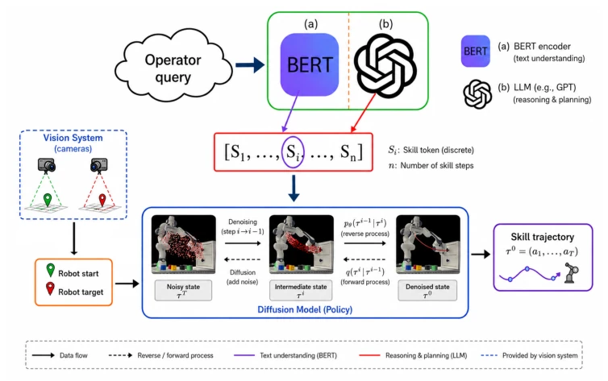
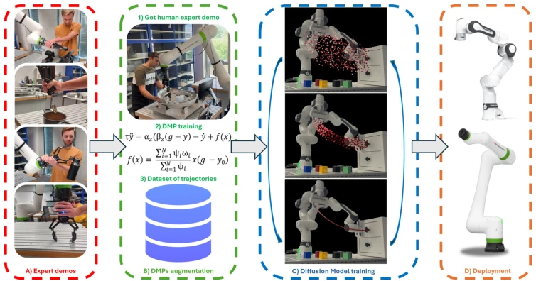
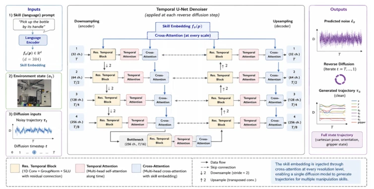
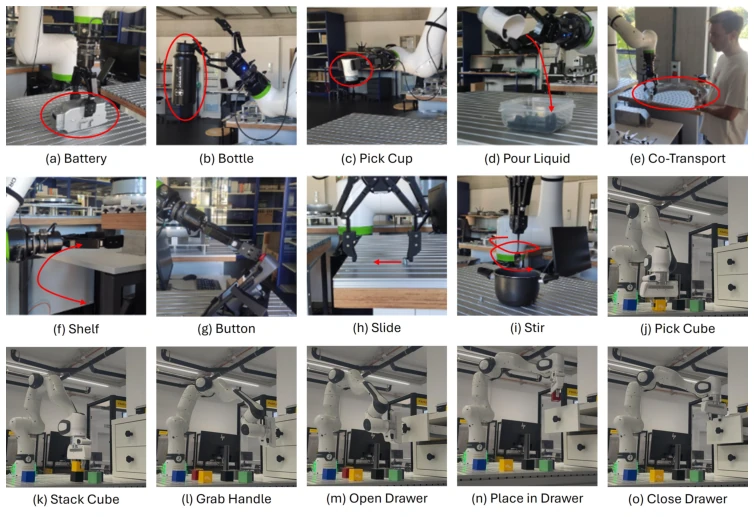
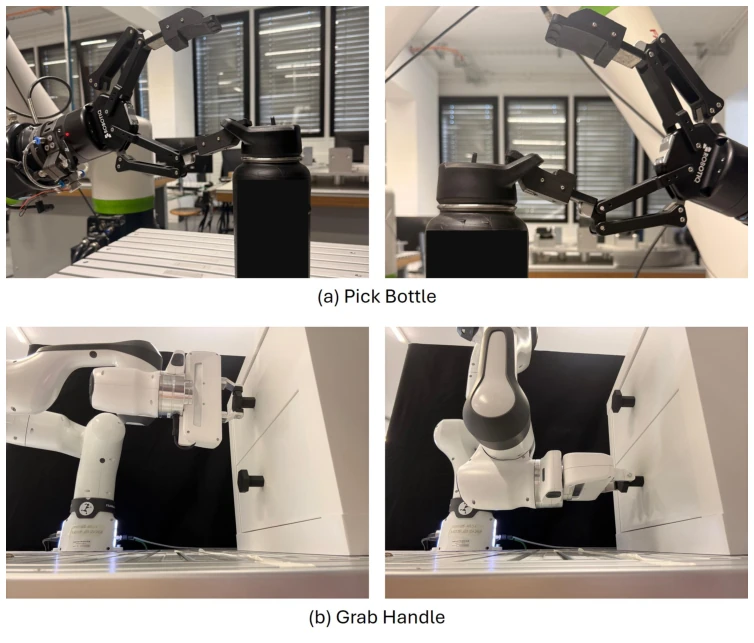
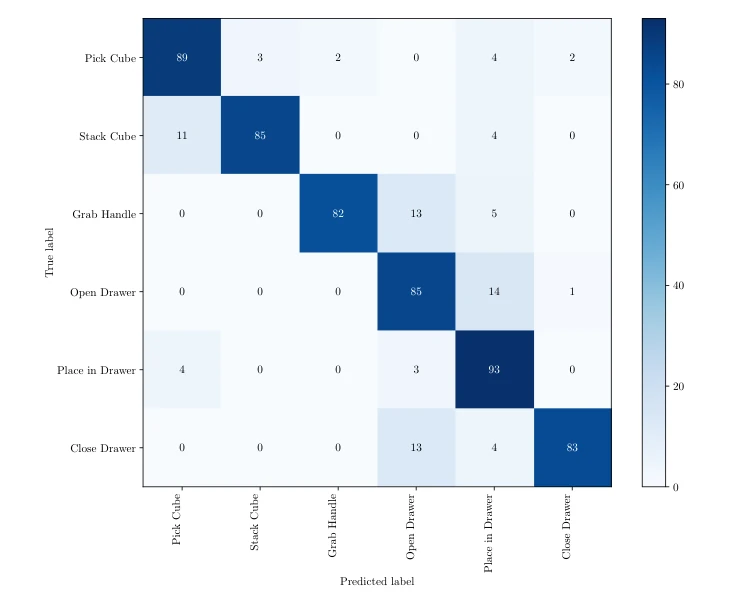
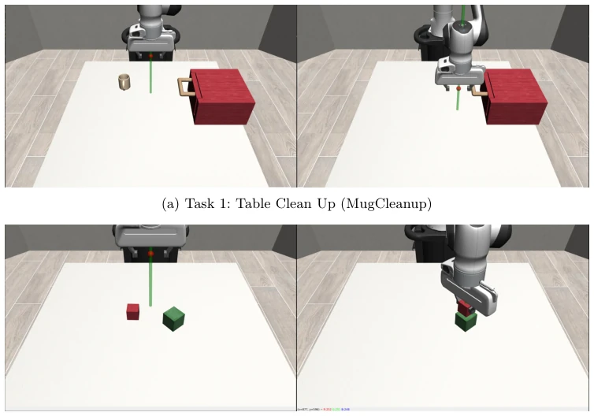

DROM attempts to address the data hunger problem in multi-skill operations using diffusion models, which is commendable. Using DMP to expand a few demonstrations into 300 trajectories counts as a clever "creating something from nothing" operation, saving collection time. A unified model handling 17 skills is superior to single-task training. However, do not overhype it; although LLM planning is decoupled, a 4-second inference latency is still awkward in real-time interaction, and the experiments rely on ArUco markers, what if these are absent in real environments? Rotation generalization capability remains poor on complex objects, such as the pouring task. Overall, it is a decent engineering attempt, but still falls short of a general-purpose robot, belonging to a variant of "a clever housewife cannot cook without rice"; the rice is available, but the heat control still depends on real machine performance.
Existing imitation learning relies on large amounts of task-specific data and has poor scalability [2]. Although VLA models can operate end-to-end, they require internet-level data and have high inference latency, making deployment difficult [7, 10, 11]. Diffusion models generate good trajectories but are typically limited to single skills, and training from scratch has low sample efficiency [12, 16]. Existing methods lack a balance between dense data requirements and language-guided long-horizon tasks, making it difficult to achieve multi-skill generalization under limited demonstrations. Especially, long-horizon task planning often requires pre-programming, lacking the flexibility of natural language interaction. Therefore, there is an urgent need for a multi-skill framework that can both utilize data efficiently and understand complex tasks through language.

Fig. 1: Illustration of the two operational modalities of DROM: (a) language- guided single-skill execution, where an operator query is embedded and mapped to a manipulation primitive to generate a skill-consistent trajectory; and (b) language- guided long-horizon planning, where a language model decomposes a high-level objective into an ordered sequence of skills, each executed via diffusion-based trajec- tory generation.
The overall process is divided into training and inference. Training side: First collect a small number of expert demonstrations, use Dynamic Motion Primitives (DMP) to mathematically expand a single trajectory into 300 synthetic trajectories, covering different start/goal states, to construct a multi-skill dataset. The diffusion model adopts a Temporal U-Net architecture, introducing Cross-Attention layers to inject skill language embeddings, achieving single-model generation of multi-skill trajectories. Inference side: First use cluster conformal prediction to judge whether the instruction is a single skill or a long-horizon task. If single skill, the language encoder maps the skill; if long-horizon, the LLM decomposes it into a skill sequence, and the diffusion model generates trajectories segment by segment. Key innovations lie in DMP data augmentation and multi-skill diffusion decoupling, as well as a confidence-based task decomposition mechanism. The model contains approximately 60 million parameters, trained for 500 epochs, using the DDIM scheduler.

Fig. 2: Overview of the diffusion-based training pipeline of DROM: (A) collection of a single expert demonstration per skill; (B) synthetic dataset expansion using Dynamic Movement Primitives (DMPs); (C) training of the skill-conditioned diffusion model on the augmented multi-skill dataset; and (D) deployment in simulation and on real robotic platforms.

Fig. 4: Architecture of the proposed skill-conditioned diffusion model. At each reverse diffusion step, a Temporal U-Net denoiser predicts the noise of the trajec- tory conditioned on the diffusion timestep, the environment state, and the language embedding of the user prompt. Cross-attention layers at every level of the U-Net allow the model to attend to skill-specific semantic information while preserving temporal structure through the U-Net backbone.
Validated on Franka Panda, FANUC, and MuJoCo, covering 17 skills (such as grasping, pouring, stacking). Baseline comparisons include MPD and Behavior Cloning. The metric is success rate. Results show DROM performs better on spatial extrapolation (X/Y axis average expansion 20%+). Increasing the number of demonstrations significantly improves the success rate of multi-modal skills (e.g., grasping a bottle) (from 24% to 84%). However, rotation generalization is limited on sensitive tasks. LLM planning is effective on long-horizon tasks (e.g., cleanup), but inference takes about 4 seconds. This proves the importance of data augmentation for generalization. Experiments also demonstrate generalization capabilities under different object positions, such as battery grasping with X-axis expansion of 23%.

Fig. 3: The set of manipulation skills considered in this study for the FANUC CRX25ia robot (a–i) and the Franka Emika Panda (j–o).

Fig. 6: Qualitative examples of multimodal trajectory generation. (a) Pick Bottle: depending on the bottle orientation, the diffusion model generates different approach trajectories to insert a gripper finger into the handle. (b) Grab Handle: the model adapts the grasping motion to two drawers with different handle geometries, producing the corresponding manipulation strategy.

Fig. 7: Confusion matrix of the language encoder on the six manipulation primitives executed with the Franka Emika Panda robot.
其他图片Other Figures

Fig. 5: Simulation environments. The two environments are designed to closely replicate the manipulation setups executed on the real Franka arm, while introducing structured, multi-stage objectives that decompose naturally into sequential subtasks.